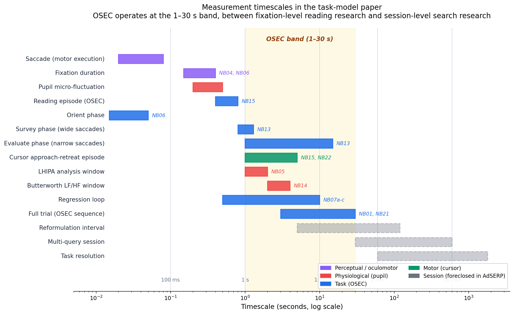
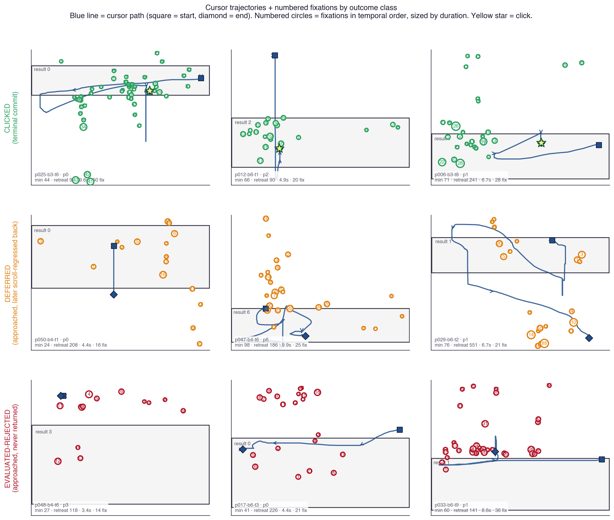
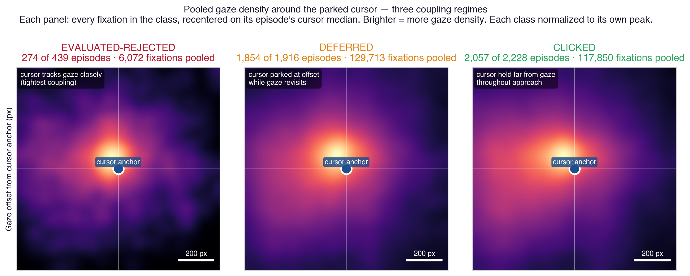
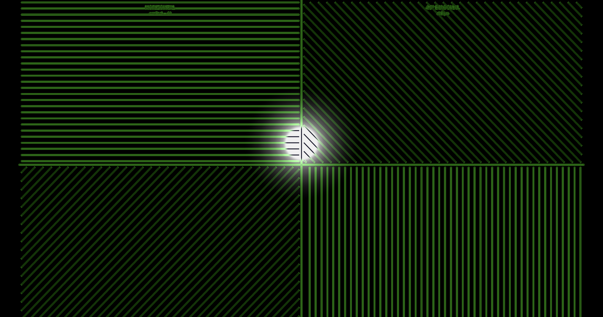

muriel
A next-gen visual-production skill for LLMs.
Built for the agentic era, grounded in the full design-history lineage.
What it is
A dozen channels of tool-use recipes — ten output channels (raster, SVG, web, interactive, video, terminal, density viz, gaze, science, infographics) plus two cross-channel references (dimensions, style-guides) — each with rules, patterns, and anti-patterns. A two-tier brand-token schema with motion. A multi-constraint solver that enforces 8:1 contrast and the OLED palette at render time. A vision-model critique agent grounded in Tufte / Bertin / Gestalt / Reichle / scanpath research.
Next-gen means the tools — LLM-native skill format, vision-model critique, brand tokens alive at render time, motion as a first-class schema field, engine adapters for Pillow / Flux / pretext / ffmpeg / Playwright. Grounded means the principles — Cooper's Visible Language Workshop, Tufte's data-ink discipline, Bertin's retinal variables, Gestalt grouping, CRAP, Reichle's E-Z Reader, scanpath patterns. New tools serve the old principles.
Featured work
Shipped examples from a vision-science dev log that exemplify what muriel's channels produce. Each figure links to the live post; the repo gallery has the full set.

Science channel
Reading span — on/off A/B.
Tools: matplotlib (figure composition) · muriel.matplotlibrc_dark (palette + rcparams) · muriel.dimensions.figsize_for('chi', columns=2) (paper-safe sizing) · muriel.stats.format_comparison() (the caption format). Paired-conditions A/B — the exact pattern muriel's science channel targets.
Live post →

Raster channel
Color sprint — before / after.
Tools: Pillow (image composition + draw) · matplotlib (curve overlay rendered as PNG, composited) · muriel.typeset.py (caption typography) · muriel.contrast.audit_svg() (pre-ship 8:1 check on annotations). Canonical small-multiples A/B.
Live post →


Raster channel — interactive → captured
Dashboard mode comparison.
Tools: a WebGL foveation engine (external — Scrutinizer) for the rendering · muriel.capture.capture_responsive() for the retina screenshots · Pillow for side-by-side composition · muriel.dimensions.OG_CARD for final size. Same stimulus, two processing modes.
Live post →

Science channel
OSEC measurement timescales.
Tools: matplotlib (horizontal Gantt-style bars on log-scale x-axis) · muriel.matplotlibrc_light (warm editorial palette) · muriel.dimensions.figsize_for('cikm') (paper-safe sizing) · annotated with notebook-K-claim references from the project's Key Claims aggregate. Maps each measurement primitive (saccade, fixation, pupil micro-fluctuation, OSEC orient/survey/evaluate phases, LHIPA window, regression loop, full trial, multi-query session) onto seconds-log space with the OSEC operating band highlighted. The figure that situates a research program in one frame.
Live post →

Gaze channel — small multiples
Cursor + gaze trajectories by outcome class.
Tools: matplotlib subplot grid (3×3) · muriel.gaze primitives (numbered fixations sized by duration, start-square / end-diamond cursor markers, AOI rectangles) · muriel.matplotlibrc_light palette · class-coded color (green clicked / orange deferred / red eval-rejected). The small-multiples principle made literal: identical axes and encoding, only the outcome class varies row-by-row. Reading the rows reveals the behavioral signature (tight tracking → late return → never return).
Live post →

Density viz channel
Pooled gaze density around the parked cursor — three coupling regimes.
Tools: numpy 2D histogram for the density estimation · matplotlib imshow with the inferno-family fire colormap · per-panel peak normalization · muriel.heatmaps conventions (Tobii-style Gaussian-pooled overlay, scale-bar annotation, normalized luminance against ground-truth landmarks). Pools every fixation in each outcome class, recentered on its episode's cursor median: tight coupling (eval-rejected, ~220 px) → cursor parked at offset while gaze revisits (deferred, ~300 px) → cursor held far from gaze throughout approach (clicked, ~390 px). The figure that makes a population statistic visible as a shape.
Live post →

Interactive channel — interactive → captured
Cortical grid comparison — orientation energy revealed by foveation.
Tools: a WebGL grid-comparison demo (external — Scrutinizer's reference-pages/grid-comparison.html, four orientation tiles + foveated spotlight, isotropic-cortical sampling) for the rendering · muriel.capture.capture_responsive() for the retina screenshot · the OLED palette (cream-on-near-black) preserved through capture. Pairs the live interactive substrate with muriel's static-capture pipeline — a demonstration that "the figure" and "the demo" can share a source.
Live post →
Motion tuner
muriel's brand.toml ships a [motion] block with duration tokens (instant / fast / normal / slow / reveal, in ms) and easing tokens (default / emphasis / snappy / linear). Move the sliders; the animated bars below re-play at every change. Copy the resulting TOML snippet back into any project's brand.toml to apply.
Install
As a Claude Code skill:
git clone https://github.com/andyed/muriel ~/Documents/dev/muriel
cd ~/Documents/dev/muriel && ./install.shThen invoke with /muriel from any Claude Code session. See the Install section in the README for Python package and cross-harness instructions.
The critique agent
muriel ships a vision-model critique agent with read-only tools, hardened against prompt-injection, authority-laundering, and contrast-claim spoofing embedded in the artifact itself. It names what's wrong — with evidence — and cites the specific framework (Tufte / Bertin / Gestalt / CRAP / Reichle / scanpath) when surfacing issues. Fix is a human call; the agent doesn't try.
muriel-critique subagent on a rendered artifact. It returns a structured verdict — PASS / NEEDS REVISION / FAIL — with a numbered issue list (rule · evidence · fix · severity). Any CRITICAL → FAIL; any HIGH → NEEDS REVISION; otherwise PASS.